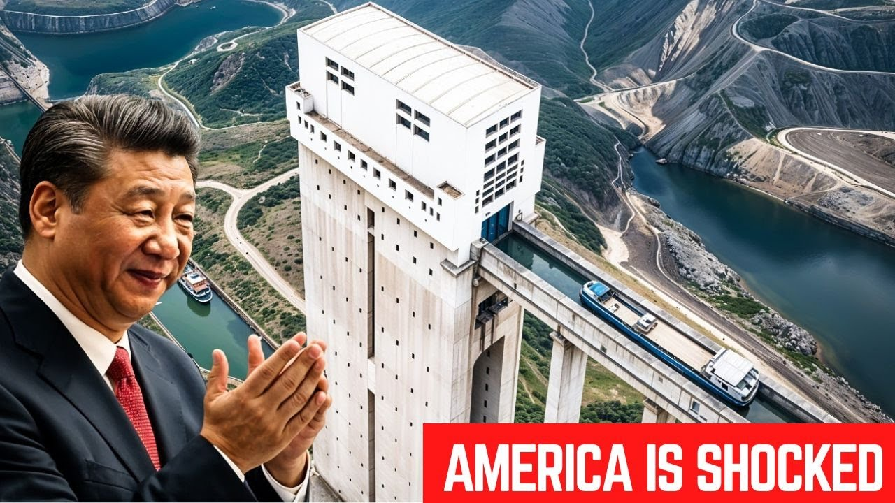

【中国建造了翻山越岭的船舶电梯】
Summary: China constructed a massive ship elevator called the Gupatan shiplift to overcome mountainous terrain, revolutionizing inland trade and regional development while showcasing strategic economic planning.
摘要： 中国建造了名为构皮滩升船机的巨型船舶电梯，克服山区地形，彻底改变了内陆贸易和区域发展，同时展示了战略性经济规划。

⏱️ Estimated Reading Time: 16 min
What if ships could sail over mountains?
如果船舶能翻山越岭会怎样？
China didn't ask what if.
中国没有空想假设。
They built it.
他们直接建成了。
Gupatan shiplift.
构皮滩升船机。
A $7.7 billion mega elevator that hauls 10,000 ton ships, each as tall as a 66-story skyscraper.
这个耗资77亿美元的巨型电梯可提升万吨级船舶，每艘船高度堪比66层摩天大楼。
A jaw-dropping 199 m into the sky like a floating Titan defying gravity itself.
船舶以令人惊叹的199米高度升入天空，宛如挑战重力的浮空巨人。
But why build this monster in the first place?
但为何要建造这个庞然大物？
The answer reveals a masterclass in strategic thinking that goes far beyond simply moving cargo from point A to point B.
答案展现了超越单纯货运的战略思维典范。
China's inland trade faces a brutal challenge.
中国的内陆贸易面临严峻挑战。
Mountains, cliffs, and unpredictable terrain.
山脉、悬崖和变幻莫测的地形。
Nowhere is this more obvious than the Wu Jang River in Guijou Province, a region where traditional transport methods are slow, expensive, and often dangerous.
这一点在贵州乌江流域尤为明显，传统运输方式缓慢、昂贵且危险。
The geography here isn't just challenging, it's hostile.
这里的地形不仅是挑战，更是敌手。
Sharp limestone peaks erupt from the landscape like dragon's teeth.
尖锐的石灰岩山峰如龙牙般刺破地表。
Narrow valleys plunge hundreds of meters below.
狭窄的峡谷深陷数百米。
Monsoon seasons transform gentle streams into raging torrents.
雨季将平静的溪流变成汹涌激流。
For centuries, this region was known as the mountain that devours men due to its treacherous passages and deadly landslides.
几个世纪以来，这里因险恶通道和致命滑坡被称为"食人山"。
Before the shiplift, moving cargo through this labyrinth of rock and water was nearly impossible.
在升船机建成前，穿越这片山水迷宫运输货物几乎不可能。
Ships had no path forward.
船舶无路可走。
Trucks crawled along crumbling roads, barely holding their ground against landslides.
卡车在崩塌的道路上爬行，勉强抵抗着山体滑坡。
Traditional canal locks, which have worked in other parts of the world, were too slow and impractical for this extreme landscape.
传统船闸在其他地区可行，但对此极端地形过于缓慢且不切实际。
A conventional lock system would have required an endless chain of at least 20 separate chambers to navigate the nearly 200 m elevation change.
常规船闸系统需要至少20级闸室才能应对近200米的水位差。
The economic cost was devastating.
经济代价是毁灭性的。
Shipping a single container from Gujo to Shanghai could take up to two weeks and cost three times more than comparable distances elsewhere in China.
从贵州运一个集装箱到上海需两周，成本是其他同等距离的三倍。
Local industries suffered.
当地产业受损。
Foreign investment avoided the region entirely.
外资完全避开该地区。
An entire province with 36 million people larger than most European countries remained economically isolated in one of the world's fastest growing economies.
这个3600万人口的省份比多数欧洲国家还大，却在全球增长最快的经济体中处于经济孤立状态。
So, China did something radical.
于是中国采取了激进措施。
Instead of forcing the river to adapt to trade, they made trade adapt to the river.
不是让河流适应贸易，而是让贸易适应河流。
That's where the Gupetan shiplift comes in.
构皮滩升船机应运而生。
A machine so powerful it compresses 4 days of travel into just 2.5 hours.
这台机器威力巨大，将4天的航程压缩至2.5小时。
Imagine a ship the size of a football field entering a colossal steel chamber.
想象足球场大小的船舶进入巨型钢制承船厢。
The gates slam shut, sealing it inside with precision engineered hydraulic doors weighing 400 tons each.
重达400吨的液压闸门精密闭合，将船舶密封其中。
Then the magic begins.
接着奇迹上演。
Massive pumps roar to life, flooding the chamber with water, cradling the vessel in a liquid elevator.
巨型水泵启动，水流注入承船厢，船舶如同置身液体电梯。
The chamber itself weighs 3,000 tons empty.
空载时承船厢重3000吨。
But with water and a fully loaded cargo ship, this weight balloons to over 11,000 tons.
但注水并载入货船后，总重超过11000吨。
Slowly, the entire structure rises straight up as if the river itself is lifting it over the mountain.
整个结构缓缓垂直上升，仿佛河流正托举它越过高山。
The ship ascends, climbing higher than the Statue of Liberty and the Great Pyramid of Giza combined.
船舶攀升高度超过自由女神像和吉萨大金字塔的总和。
From inside the ship, the experience is surreal.
船内体验超现实。
The ground falls away.
大地逐渐远离。
The world outside shrinking like a disappearing valley.
外部世界如消逝的山谷般缩小。
Through small port holes in the chamber walls, passengers can glimpse the shrinking landscape below.
通过厢壁舷窗，乘客可见下方渐缩的景色。
River becomes ribbon.
河流化作丝带。
Villages become specks.
村庄变成斑点。
The vast scale of the surrounding mountains becomes apparent only when you're halfway up their imposing faces.
唯有升至山腰时，周围群山的庞大规模才清晰显现。
When the chamber reaches the upper reservoir, the forward gates open to reveal a new world.
当承船厢抵达上游水库，前闸开启展现新天地。
A sprawling lake where just minutes before there was nothing but air.
几分钟前还是虚空之处，此刻展现辽阔湖泊。
The ship glides forward, continuing its journey as if it hadn't just performed an engineering miracle.
船舶滑行向前继续航程，仿佛刚才的工程奇迹不曾发生。
It's not just a shortcut.
这不仅是捷径。
It's a gamecher.
更是颠覆者。
A river highway carved into the sky.
一条镌刻在天空中的河流高速公路。
At the heart of this machine is a floating fortress.
这台机器的核心是浮动堡垒。
A colossal ship chamber 40 m long and 12 m wide holding 500 tons of steel and water.
40米长、12米宽的巨型承船厢承载着500吨钢材与水。
But how do you lift something this massive without disaster?
但如何安全提升如此庞然大物？
The answer lies in raw mechanical power and surgical precision.
答案在于原始机械力量与外科手术般的精度。
The chamber moves along four massive concrete towers that function as both guide rails and structural support.
承船厢沿四座混凝土塔柱升降，塔柱兼具导轨与结构支撑功能。
These towers are anchored deep into the bedrock with foundations extending 70 m below the visible structure.
塔柱地基深入基岩70米，远超可见结构。
Each tower contains redundant systems of cables, counterwes, and emergency brakes.
每座塔柱配备多重缆索、配重和紧急制动系统。
256 steel cables, each strong enough to tow a jumbo jet, guide the chamber along a gear rack climbing system.
256根钢缆（每根可拖动大型客机）引导承船厢沿齿条爬升系统运动。
These aren't ordinary cables.
这些非普通钢缆。
Each is composed of 127 individual strands of high tensile steel twisted together in a precise pattern that maximizes strength while minimizing weight.
每根由127股高强钢丝按精密模式绞合，实现最大强度与最轻重量。
If laid end to end, the cables would stretch over 80 km.
若首尾相连，钢缆总长超80公里。
Interlocking metal teeth lift the entire structure vertically like a skyscraper sized cog wheel.
咬合金属齿条如摩天轮大小的齿轮垂直提升整个结构。
These teeth must engage perfectly on every cycle with tolerances measured in millimeters despite the enormous forces involved.
尽管承受巨大力量，这些齿条每次咬合精度需达毫米级。
The teeth are made from a special alloy that's both incredibly hard yet flexible enough to absorb micro vibrations that would otherwise damage the system.
齿条采用特殊合金，既极度坚硬又具柔韧性，可吸收可能损坏系统的微振动。
A nut column safety system absorbs the violent shock waves from winds, waves, and even earthquakes.
螺母柱安全系统吸收风浪甚至地震的剧烈冲击波。
The lift must stay perfectly balanced even under the tremendous weight of ships and turbulent water pressure.
即便承受船舶巨大重量和湍流水压，升船机必须保持绝对平衡。
Sensors throughout the structure constantly monitor for the slightest imbalance, automatically adjusting the lifting mechanism to compensate.
遍布结构的传感器持续监测最轻微失衡，自动调整提升机构补偿。
Counterwes and hydraulic dampers help stabilize the motion, ensuring that even with millimeter level precision, the system doesn't buckle under pressure.
配重与液压阻尼器稳定运行，确保系统在毫米级精度下不因压力变形。
The dampers themselves contain enough hydraulic fluid to fill an Olympic swimming pool and can absorb forces equivalent to a small meteorite impact.
阻尼器液压油可注满奥运泳池，能吸收相当于小陨石撞击的力。
The power requirements are staggering.
电力需求惊人。
The lift consumes enough electricity to power a small city, though much of this is generated by the dam's own hydroelectric turbines.
升船机耗电量堪比小城市，但大部分来自大坝自身水轮机。
Backup generators can provide emergency power sufficient to safely lower the chamber in case of a grid failure.
备用发电机可在电网故障时提供足够电力安全降下承船厢。
Every cycle is a highstakes ballet of physics and engineering.
每次升降都是物理与工程的高风险芭蕾。
One miscalculation and the entire 10,000 ton mass could slam into the structure with catastrophic force.
一次误算，万吨质量便可能以灾难性力量撞击结构。
The control systems feature quintiple redundancy.
控制系统采用五重冗余。
Five separate computers continuously check each other's calculations with any disagreement triggering an immediate safety protocol.
五台独立计算机持续交叉验证，任何分歧立即触发安全协议。
Each lifting cycle takes just 30 minutes.
每次升降仅需30分钟。
In 2 and 1/2 hours, an entire mountain range is bypassed.
两个半小时即可翻越整条山脉。
The system can complete up to 24 full cycles per day, moving nearly 5 million tons of cargo annually.
该系统每日可完成24次全程升降，年货运量近500万吨。
A massive shortcut, a gamecher for China's trade routes.
这是中国贸易路线的巨大捷径与规则改变者。
But efficiency wasn't the only goal.
但效率并非唯一目标。
This project had a far bigger agenda.
该项目有更宏大议程。
At first glance, the Gupetan shiplift seems like a futuristic way to move cargo.
乍看构皮滩升船机只是未来主义的货运方式。
But beneath the surface, it reveals a much deeper strategy, one that rewrites the economic map of China.
实则它揭示了改写中国经济版图的深层战略。
For decades, Gujo province was a logistical dead zone.
数十年来贵州是物流死角。
Its economy was trapped by the same mountains that made transport nearly impossible.
其经济被导致运输几近不可能的同批山脉禁锢。
Industries struggled.
产业举步维艰。
Trade crawled.
贸易缓慢如爬行。
Entire regions were cut off from prosperity.
整个区域与繁荣隔绝。
The province consistently ranked among China's poorest with per capita GDP less than a third of coastal regions.
该省长期位居中国最贫困地区，人均GDP不足沿海三分之一。
Now, that's changed.
如今情况改变。
With this vertical water highway, Gujo is directly linked to China's economic backbone, the Yangze River.
通过这条垂直水道，贵州直连中国经济命脉长江。
The result, a 5 million ton freight corridor that slashes costs, accelerates trade, and turns a once-forgotten region into a key economic hub.
结果是500万吨级货运通道降低成本、加速贸易，将遗忘之地变为经济枢纽。
The numbers tell the story.
数字说明一切。
Since the lift's completion, shipping costs from Guijou have dropped by 67%.
升船机建成后，贵州货运成本下降67%。
Industrial output has increased by 42%.
工业产出增长42%。
Foreign investment has surged by 83%.
外资激增83%。
Previously, uneconomical industries from advanced manufacturing to agriculture are suddenly viable.
从前不经济的先进制造业与农业突然可行。
A province once known for subsistance farming now hosts technology parks and export zones.
曾以 subsistence farming 闻名的省份如今拥有科技园与出口区。
Villages that once clung to existence now thrive as service centers for the new shipping corridor.
曾经勉强生存的村庄现作为新航运走廊服务中心蓬勃发展。
Thousands of jobs have been created, not just in shipping, but in maintenance, logistics, and supporting industries.
创造了数千岗位，不仅限于航运，还包括维护、物流与配套产业。
Tourism itself has boomed with the lift becoming a destination for both domestic and international visitors fascinated by this engineering wonder.
旅游业随之繁荣，升船机成为国内外游客向往的工程奇观。
But here's the bigger picture.
但更宏大的图景是：
This isn't just about regional development.
这不仅关乎区域发展。
It's about fortifying China's domestic supply chains.
更是巩固中国国内供应链。
Imagine if international shipping lanes were suddenly disrupted.
设想国际航道突然中断。
Ports close, sanctions tighten, global trade grinds to a halt.
港口关闭、制裁收紧、全球贸易停滞。
How does China keep its economy moving?
中国如何维持经济运转？
That's where massive inland infrastructure like this becomes critical.
这正是此类大型内陆基建的关键所在。
The Gupatan shiplift is part of a broader network that includes the Three Gorges Dam, the south to north water transfer project, and thousands of kilometers of inland waterways.
构皮滩升船机是包括三峡大坝、南水北调工程和数千公里内河航道的更广泛网络的一部分。
Together, they form an internal circulation system, one that can keep goods flowing even if external arteries are severed.
它们共同构成内循环系统，即使外部命脉切断仍能保持货流畅通。
This isn't merely speculation.
这非凭空猜测。
China's dual circulation economic policy explicitly prioritizes developing resilient domestic supply chains that can function independently of global systems if necessary.
中国"双循环"经济政策明确优先发展弹性国内供应链，必要时可独立于全球体系运行。
Projects like the Gupitan ship lift are physical manifestations of this strategy.
构皮滩升船机等项目是此战略的具体体现。
While the world obsesses over China's skyscrapers, bullet trains, and mega cities, it's the hidden supply chains, the ones buried in the mountains and rivers, that might determine its future.
当世界瞩目中国摩天楼、高铁和超级城市时，真正决定未来的可能是隐匿于山川的供应链网络。
These projects receive less international attention, but may ultimately prove more consequential.
这些项目国际关注较少，但最终可能更具决定性。
The shiplift also represents a powerful geoengineering approach to climate adaptation.
升船机也代表应对气候变化的强力地理工程方案。
As weather patterns become more extreme, water management becomes increasingly crucial.
随着天气模式愈发极端，水资源管理日趋关键。
Systems like the Gupetan shiplift help regulate water flow, prevent flooding, and ensure continued navigability despite changing rainfall patterns.
构皮滩升船机等系统有助于调节水流、防洪，并在降雨模式变化下确保持续通航。
This shiplift isn't just a machine.
这台升船机不仅是机器。
It's an insurance policy.
它是保险单。
a chess move in a global economic game, a physical manifestation of China's long-term strategic thinking.
全球经济博弈中的一步棋，中国长期战略思维的物质体现。
So, was this built for efficiency or to future proof China against global uncertainty?
那么，这是为效率而建，还是为中国抵御全球不确定性？
The answer increasingly appears to be both.
答案愈发清晰：两者皆是。
China's Gupetan shiplift isn't just an engineering marvel.
中国构皮滩升船机不单是工程奇迹。
It's a statement.
更是一份宣言。
A $7.7 billion vertical highway that bends mountains to its will, slashes trade routes, and reshapes entire regions.
这条77亿美元的垂直高速公路令高山屈从意志，重塑贸易路线，改变区域格局。
But it's also just one piece of a much larger puzzle.
但它只是宏大拼图的一角。
Similar projects are already under construction throughout China's western provinces.
类似项目已在中国西部各省开建。
The technology developed for Gupatan is being refined, scaled, and expanded.
构皮滩研发的技术正被改进、推广和扩展。
Future lifts may be even taller, faster, and more efficient.
未来升船机可能更高、更快、更高效。
Moreover, this expertise is becoming an export product itself.
此外，这项专长正成为出口产品。
Chinese engineers who worked on Gupatan are now consulting on similar projects in Southeast Asia, Central Asia, and Africa as part of the Belt and Road Initiative.
参与构皮滩的中国工程师现为东南亚、中亚和非洲类似项目提供咨询，作为"一带一路"倡议的一部分。
The knowledge gained from one impossible project fuels dozens more.
从一项"不可能任务"获取的知识正推动更多项目。
If China can pull this off, what's next?
若中国能实现这个，下一步是什么？